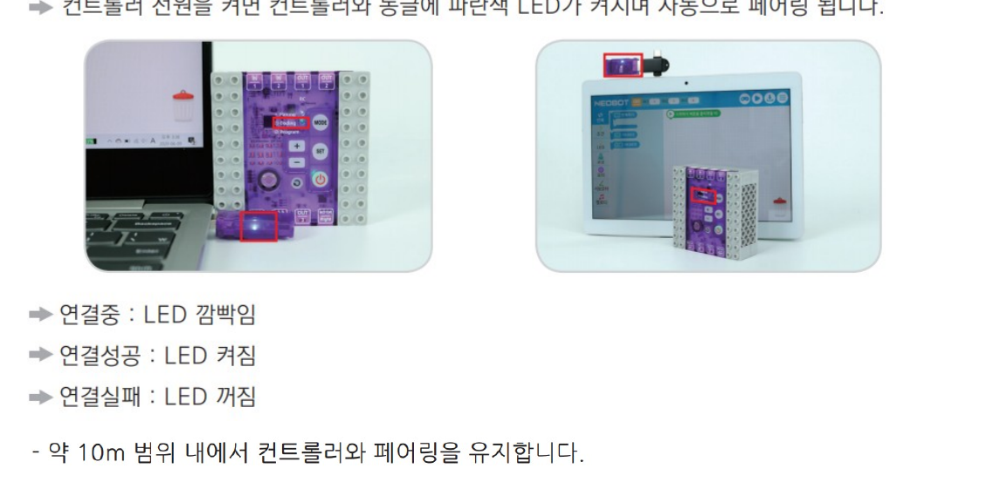
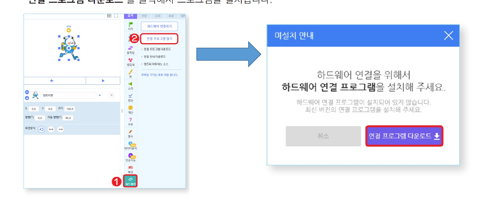
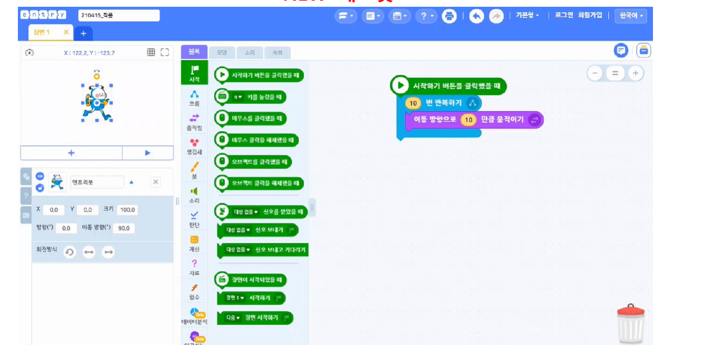
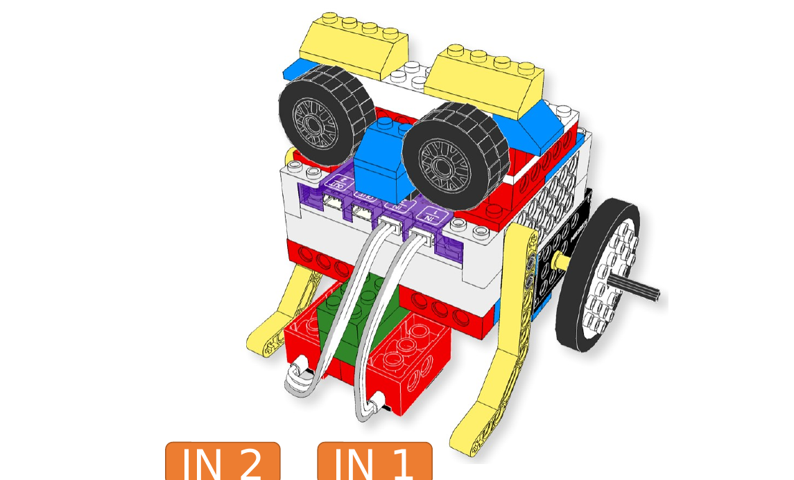
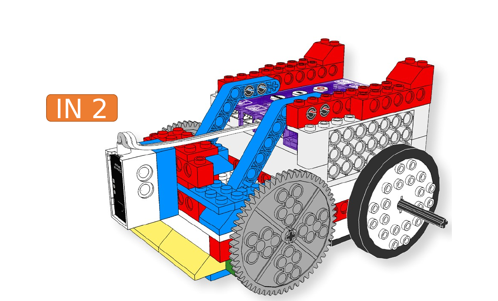
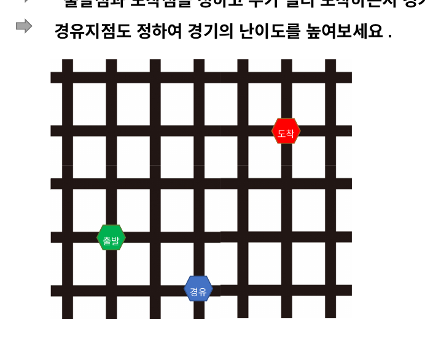
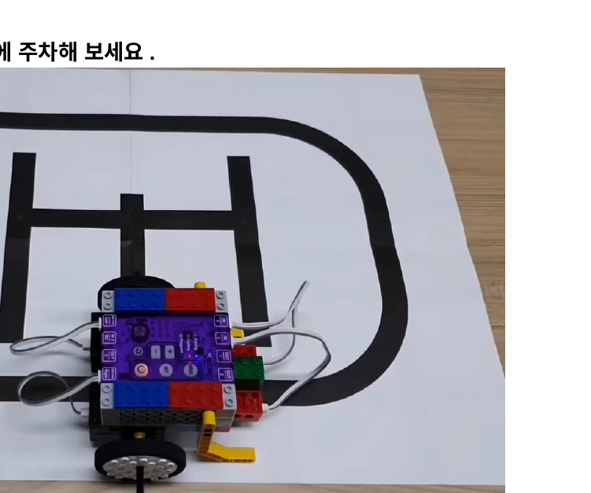

네오쏘코 AI 로봇 교실 · 중학교 2학년
스스로 달리는
로봇 만들기
테슬라처럼 보고, 듣고, 판단하는 자율주행을
네오쏘코로 작게 따라 해 보기
2시간2026년 11월강사 이유정
01
01 발표자 메모
"2시간 뒤 여러분 로봇은 선생님 목소리를 듣고 출발해서, 선을 따라 달리다 장애물을 만나면 스스로 돌아 결승선까지 갑니다." 한 문장으로 목표부터. 표지 그림은 ChatGPT 생성본으로 교체 예정.
테슬라는 어떻게 혼자 달릴까?
운전자는 손을 놓고 있는데, 차가 스스로 달린다
▶ 클릭해서 재생 · 40초
운전자는
뭘 하고 있지?영상이 끝나면 물어보기
좌회전 · 신호 대기 · 차선 변경
영상: Tesla 공식 "Full Self-Driving (Supervised)" (2024)
02
02 발표자 메모
영상은 슬라이드 안에서 바로 재생(40초 클립). 끝나면 "운전자는 뭘 하고 있었죠?" → "그럼 차는 뭘 보고 어떻게 판단했을까?" 하고 다음 장으로.
눈 → 뇌 → 손발, 전부 하나의 신경망
카메라 영상이 들어가면, 핸들 각도와 속도가 나온다 — 1초에 수십 번
INPUT · 눈
HIDDEN · 뇌
OUTPUT · 손발
신경망
카메라 8대가 본다차선 · 차 · 사람 → 3D 세상
신경망이 길을 정한다어디로, 얼마나 빨리
핸들 · 페달이 움직인다모터가 돌리고 밟는다
왼쪽 영상이 들어가서 오른쪽 핸들로 나오기까지 약 0.03초
영상: Tesla AI Day 2022, Tesla 공식 FSD 영상
03
03 발표자 메모
세 영상이 동시에 돌아간다. "왼쪽에서 들어온 영상이 가운데를 지나 오른쪽 핸들로 나오는 데 0.03초". 1초에 수십 번 = 뒤에 나올 '계속 반복하기' 블록의 복선.
카메라 8대가 세상을 3D로 바꾼다
라이다(레이저) 없이 카메라만 — 사람도 눈으로만 운전하니까
8개 카메라 → 신경망 → 3D 공간
8대앞 3 · 옆 4 · 뒤 1
360°사각지대 없음
36장/초카메라마다 1초에 찍는 수
영상: Tesla AI Day 2022 — 8 cameras to 3D vector space
04
04 발표자 메모
"여러분 눈은 2개, 테슬라는 8개. 그런데 눈이 많다고 끝이 아니라 사진을 3D 세상으로 바꿔야 한다." 우리 로봇의 적외선 센서 2개 + 거리 센서 1개로 연결될 복선.
사람이 운전한 영상 수백만 개로 배웠다
규칙을 일일이 적지 않는다 — 영상을 넣으면 핸들·페달 값이 나오도록 학습
신경망 — 수십억 개의 숫자(가중치)가 연결 세기를 정한다
핸들 각도 +12°
가속 35%
브레이크 0%
출력지금 이 순간의 조작값
FSD v12(2024)부터 '엔드투엔드' 방식: 사람이 쓴 규칙 코드 대신 신경망 하나가 영상→조작을 맡는다
05
05 발표자 메모
"예전엔 프로그래머가 '빨간불이면 멈춰' 같은 규칙을 수십만 줄 썼는데, 지금은 잘하는 운전자 영상 수백만 개를 보여주고 따라 하게 한다." 우리 로봇은 반대로 규칙을 직접 쓰는 방식이라는 대비를 다음 섹션에서 준다.
핸들과 페달은 모터가 움직인다
신경망이 정한 값대로 — 손을 놓아도 핸들이 혼자 돈다
핸들이 혼자 돈다
핸들조향 모터가 각도를 돌린다
페달전기 모터가 속도를 올리고 줄인다
수십 번/초아주 조금씩, 계속 고쳐 잡는다
영상: Tesla 공식 "Full Self-Driving (Supervised)"
06
06 발표자 메모
여기까지가 자율주행의 기본 3요소(눈·뇌·손발). "우리 로봇도 모터 2개의 속도 차이로 방향을 바꿉니다"라고 한 마디.
목적지는 말로 정한다
"가장 가까운 스타벅스로 세팅해" → "내비 세팅 완료, 5분 거리야" — 한국말로 주고받는다
▶ 클릭해서 재생 · 한국어 · 37초
듣는다마이크로 말을 글자로 바꾼다
이해한다AI 비서 그록이 뜻을 파악
내비에 찍는다목적지가 정해지면 FSD가 출발
영상: 유튜브 '노땅' 채널 — "그록 + FSD v14.2.2.4" (미국, Model Y HW4)
07
07 발표자 메모
기본 3요소에 '귀'가 더해진 것이 요즘 테슬라. "우리 로봇도 선생님이 '시작!' 하면 출발합니다"로 다음 섹션 예고.
우리 네오쏘코에도 귀 · 눈 · 뇌 · 손발이 있다
테슬라와 같은 네 가지 — 다만 훨씬 작게
귀엔트리 음성인식노트북 마이크가
"시~작!"을 듣는다
눈적외선 2 + 거리 1선을 보고,
장애물을 본다
뇌우리가 짜는 규칙"만일 왼쪽이 검으면
왼쪽으로"
08
08 발표자 메모
"테슬라의 눈이 카메라라면 우리 눈은?" 식으로 학생에게 먼저 답을 받는다. 뇌는 신경망이 아니라 우리가 직접 쓰는 규칙이라는 차이를 한 마디로.
오늘 로봇이 할 일
"시~작!"에 출발 → 선 따라 → 장애물에서 돌아서 → 결승선
1"시~작!" 듣고 스스로 출발
2검은 선을 따라 달린다
3장애물 앞에서 멈추고 180° 돌아선다
4반대로 달려 결승 띠에서 멈춘다
09
09 발표자 메모
장애물 때문에 돌아서지만 결국 한 바퀴를 다 돌아 결승에 닿는다는 점을 손가락으로 트랙을 따라가며 설명.
마지막엔 2명씩 대결
같은 도로판 두 장에서 동시에 출발 — 먼저 결승선에 닿는 로봇이 이긴다
오늘 만들 로봇
5경기2명씩 · 시간 기록
결승기록 상위 2명
규칙본선 직전에 다시 설명
10
10 발표자 메모
"그러려면 먼저 로봇을 다룰 줄 알아야겠죠?"로 기본 사용법 섹션으로.
박스를 열면
컨트롤러 · 동글 · 센서 · 모터 · 바퀴 · 블록 — 자리마다 정해져 있다
왼쪽 위컨트롤러 · 동글 · 건전지
왼쪽 아래모터 · 센서
오른쪽바퀴 · 축 · 블록
가이드북 Part1 00 · 부품 정리
11
11 발표자 메모
작은 핀과 축은 비닐에 보관. 바퀴와 타이어는 결합한 채로.
AI 컨트롤러
전원 버튼 0.5초 → 켜짐 · 입력 IN1 · IN2 · IN3 · 출력 OUT1~3 · 모터 L / R
IN 1·2·3센서를 꽂는 입력 포트
MOTOR L·R왼쪽 · 오른쪽 바퀴 모터
MODECoding ↔ Program 전환
가이드북 Part1 00 · 핵심 부품
12
12 발표자 메모
전원 1초 이상 누르면 꺼짐. +/- 버튼은 직진 보정(오늘은 안 씀).
동글 꽂고 엔트리 연결
동글 USB → 컨트롤러 전원 → 엔트리 '하드웨어 연결' → NEW 네오봇 선택
2
컨트롤러 전원 켜면 자동 페어링 (LED 켜짐)
3
엔트리 → 하드웨어 → 연결 프로그램 열기
4
'네오봇' 검색 → NEW 네오봇 선택
가이드북 Part2 00 · 엔트리 설치 / 페어링
13
13 발표자 메모
연결 안 되면: 동글 뽑았다 다시 꽂기 → 컨트롤러 전원 껐다 켜기. 수업 전 드라이버와 연결 프로그램(1.9.16 이상)은 미리 설치.
네오봇 블록 모음
하드웨어 탭에 청록색 블록이 생긴다 — 모터 · 센서 · LED · 부저
모터왼쪽/오른쪽 · 앞으로/뒤로 · 속도
IN 센서값IN1 · IN2 · IN3 숫자로
LED · 부저불 켜기, 소리 내기
가이드북 Part2 00 · 네오봇 전용 명령어
14
14 발표자 메모
오늘 쓰는 블록은 세 가지뿐: 모터 회전하기, 모터 멈추기, IN 센서값.
센서값 읽어 보기
하드웨어 상태 정보 창에서 IN1 · IN2 · IN3 값이 실시간으로 보인다
0 ~ 255센서값 범위
손을 가까이적외선 값이 올라간다
검은 종이 위적외선 값이 내려간다
가이드북 Part2 00 · 엔트리에서 센서값 확인
15
15 발표자 메모
여기서 1분 정도 각자 손으로 센서를 가리며 숫자가 바뀌는 걸 보게 한다. 코딩 전에 '값'의 감을 잡는 게 목적.
차량 로봇 조립
라인트래커 차량 + 앞에 거리 센서 — IN1 · IN2 적외선, IN3 거리

① 라인트래커 (IN1 · IN2)적외선 센서 2개는 바닥을 보게

② 앞에 거리 센서 → IN3가이드북은 IN2지만 우리는 IN3
가이드북 Part1 07 조립도 + Part2 01 조립도
16
16 발표자 메모
시간 절약: 바퀴·모터가 달린 섀시는 미리 조립해 두고, 학생은 센서 3개 장착과 케이블 연결만. 거리 센서 케이블은 IN3에!
적외선 센서는 반사된 빛을 센다
흰 종이 → 값 높음 · 검은 선 → 값 낮음
빛을 쏘고돌아오는 양을 잰다
흰색많이 반사 → 값 큼
검정빛을 흡수 → 값 작음
가이드북 Part1 07 · 적외선 센서
17
17 발표자 메모
15번 슬라이드에서 본 숫자 변화가 바로 이것. "그럼 센서가 검은 선 위에 있으면 값이?" 질문.
기본 경기장에 올리기
바퀴는 검은 선 위, 센서 두 개는 흰색 위
교차로 경기장격자 — 한 칸씩 이동 연습
원형 경기장곡선 — 계속 따라가기
선 사이에센서가 양쪽 흰색 위
가이드북 Part1 07 · 코딩하기
18
18 발표자 메모
키트에 들어 있는 기본 경기장 두 장을 사용. 본선 도로판은 나중에.
네 가지 규칙
둘 다 흰색 → 직진 · 왼쪽 검정 → 좌회전 · 오른쪽 검정 → 우회전 · 둘 다 검정 → 정지
가이드북 Part1 07 · 코딩하기
19
19 발표자 메모
"왼쪽 센서가 검은 선을 밟았다 = 차가 오른쪽으로 치우쳤다 = 왼쪽으로 꺾어야" — 몸으로 흉내 내며 설명하면 빨리 이해한다.
엔트리 코드
계속 반복하며 네 규칙을 확인한다 — 1초에 수십 번!
계속 반복하기테슬라의 '수십 번/초'와 같다
만일 ~ 이면네 규칙을 하나씩
모터 회전 · 멈춤손발을 움직이는 블록
가이드북 Part1 07(ENTRY) · 코딩하기
20
20 발표자 메모
학생이 따라 만든 뒤 바로 원형 경기장에서 실행. 속도 100%는 빠르니 처음엔 50~60%.
달려 보기
출발점 → 도착점 경주, 경유지를 넣어 난이도 올리기

교차로 경기장 — 경주
원형 경기장 — A에서 C에 주차
팁: 코너는 90° 이내로, 속도는 천천히부터
가이드북 Part1 07 · 응용하기 / 활동하기
21
21 발표자 메모
실습1 목표 달성 기준: 원형 경기장 한 바퀴를 선에서 벗어나지 않고 돈다.
거리 센서는 cm로 잰다
2m 이내를 재지만, 쓸 만한 범위는 5 ~ 200cm
cm값이 곧 거리
앞을 본다로봇 맨 앞에 장착
IN3우리 로봇의 거리 센서 포트
가이드북 Part2 01 · 거리센서
22
22 발표자 메모
테슬라는 카메라로 거리를 추정하지만 우리는 거리 센서가 바로 cm를 준다 — "우리가 더 편하죠?"
장애물을 가까이, 멀리
손이나 상자를 앞에 두면 값이 29 → 7처럼 줄어든다
가이드북 Part2 01 · 거리센서 확인하기
23
23 발표자 메모
각자 10cm 자리에 상자를 두고 값을 읽게 한다. 이 값이 다음 규칙의 기준.
규칙 하나: 10cm보다 가까우면 멈춘다
가이드북 코드 — 값이 10보다 크면 달리고, 아니면 멈춤
IN3 > 10앞이 비었다 → 직진
아니면장애물 → 모터 멈추기
10 → ?기준값을 바꿔 실험
가이드북 Part2 01 · HOW 1 (우리는 IN2 대신 IN3)
24
24 발표자 메모
가이드북 그림은 IN2이지만 우리 로봇은 IN3. 학생 코드에서 포트 번호를 꼭 확인.
멈춘 다음, 180° 돌아선다
왼쪽 모터는 앞으로, 오른쪽 모터는 뒤로 → 0.8초 → 다시 직진
▶ 시작하기 버튼을 클릭했을 때
계속 반복하기
만일 IN3 센서값 < 10 이면
양쪽 모터 멈추기
0.3 초 기다리기
왼쪽 모터 앞으로 50% · 오른쪽 모터 뒤로 50%
0.8 초 기다리기 ← 180°가 될 때까지 조정
양쪽 모터 멈추기
아니면
양쪽 모터 앞으로 60%
25
25 발표자 메모
가이드북에 없는 부분. 바퀴 두 개가 반대로 돌면 제자리 회전. 0.8초는 출발값이고 로봇마다 다르다.
회전 시간 맞추기
0.6초? 0.8초? 1.0초? — 딱 180°가 될 때까지 바꿔 본다
앞에 상자를 두고 실행
덜 돌면시간을 0.1초 늘리기
더 돌면시간을 0.1초 줄이기
건전지약해지면 다시 맞추기
26
26 발표자 메모
실습2 목표: 직진 → 상자 앞 정지 → 돌아서 → 반대로 직진. 돌아선 뒤 라인 위로 돌아오는지도 확인.
AI 블록: 오디오 감지
노트북 마이크로 소리와 말을 알아듣는 블록 — 네이버 클로바 음성인식
인공지능엔트리 블록 탭
AI 블록 불러오기오디오 감지 선택
마이크 허용크롬이 물어보면 '허용'
가이드북 Part2 03 · 코딩준비
27
27 발표자 메모
노트북 내장 마이크면 DroidCam은 필요 없다. 인터넷이 있어야 음성인식이 된다.
마이크 테스트
음성 인식하기 → 들은 말을 글자로 → 엔트리봇이 따라 말한다
가이드북 Part2 03 · AI 블록 테스트
28
28 발표자 메모
"시작"이라고 했을 때 글자가 정확히 '시작'으로 나오는지 각자 확인. '시~작'처럼 길게 말해도 보통 '시작'으로 인식된다.
소리가 나면 듣기 시작
마이크 소리크기 ≥ 30 이면 → "네, 말씀하세요" → 음성 인식
가이드북 Part2 03 · HOW 1
29
29 발표자 메모
조용할 때는 듣지 않다가 소리가 나면 인식을 시작하는 구조. 가이드북 그대로.
"시작"일 때만 출발
다른 말에는 가만히, "시작"이 들리면 출발 신호를 켠다
▶ 시작하기 버튼을 클릭했을 때
출발 을 0 로 정하기
출발 = 1 이 될 때까지 반복하기
음성 인식하기
만일 음성을 문자로 바꾼 값 = 시작 이면
"출발합니다" 읽어주기출발 을 1 로 정하기
아니면
"다시 말해 주세요" 읽어주기
가이드북 HOW 2의 "불 켜줘 / 불 꺼줘"를 "시작" 하나로 바꾼 것
30
30 발표자 메모
'출발' 변수가 1이 되면 반복을 빠져나가고, 그 아래에 실습1·2 코드가 이어진다(본선에서 합침). 인식 결과에 느낌표나 띄어쓰기가 붙으면 '='가 실패하니 '포함' 조건이 있으면 그걸로.
친구 말로 테스트
"출발" · "가자" · "시작!" — 어떤 말에 로봇이 반응할까?
"출발"반응 없어야 정상
"시작!"출발 신호 ON
"시~작"길게 말해도 OK?
가이드북 Part2 03 · PLAY
31
31 발표자 메모
실습3 목표: 선생님이 "시~작" 하면 모든 로봇의 노트북이 "출발합니다"를 말한다.
세 코드를 하나로
"시작" 기다리기 → 선 따라가기 + 장애물 유턴
▶ 시작하기 버튼을 클릭했을 때
출발 = 1 이 될 때까지 반복하기 ← 실습 3
음성 인식하기 → "시작"이면 출발 = 1
계속 반복하기
만일 IN3 < 10 이면 ← 실습 2
멈춤 → 180° 회전(0.8초) → 멈춤
아니면 ← 실습 1
둘 다 흰색 → 직진 · 왼쪽 검정 → 좌회전
오른쪽 검정 → 우회전 · 둘 다 검정 → 정지
3"시작"을 들을 때까지 기다린다
2장애물이 먼저 — 10cm 안이면 돌아선다
1아니면 선을 따라간다
F결승 띠(둘 다 검정)에서 저절로 정지
32
32 발표자 메모
순서가 중요: 장애물 검사가 라인 규칙보다 먼저. 결승 띠는 '둘 다 검정 → 정지' 규칙이 그대로 처리한다.
본선 도로판
직선 · 큰 커브 · 급커브(계단) · 공사 구간 · 결승 띠
검은 절연테이프 19mm
결승 띠 — 양쪽 센서가 검정
출발 표시는 선 바깥에
장애물 상자 자리
전지 1장(1091×788mm), 둘레 약 2.8m
33
33 발표자 메모
장애물에서 돌아선 뒤에만 큰 커브와 계단을 만난다. 같은 판 두 장을 나란히 두고 2명 동시 출발.
규칙
네 가지를 모두 해내고 먼저 결승선에 닿으면 승리
귀"시~작" 듣고 스스로 출발선생님 목소리 한 번 — 손으로 출발시키면 실격
눈선을 따라 끝까지직선 · 큰 커브 · 급커브 — 벗어나면 그 자리에 다시 올려놓기
뇌장애물에서 돌아서 반대로부딪히지 않고 180° — 공사 구간 상자
F결승 띠에서 멈추면 완주먼저 멈춘 로봇이 승리 · 시간 기록
34
34 발표자 메모
선에서 벗어나면 그 자리에 다시 올려 주되 시간은 계속 흐른다. 공정성보다 재미 우선.
대진표
2명씩 5경기 시간 기록 → 상위 2명 결승
| 경기 | 선수 A | 기록 | 선수 B | 기록 |
|---|
| 1경기 | 이름 | 00:00 | 이름 | 00:00 |
| 2경기 | 이름 | 00:00 | 이름 | 00:00 |
| 3경기 | 이름 | 00:00 | 이름 | 00:00 |
| 4경기 | 이름 | 00:00 | 이름 | 00:00 |
| 5경기 | 이름 | 00:00 | 이름 | 00:00 |
| 결승 | 기록 1위 | 00:00 | 기록 2위 | 00:00 |
35
35 발표자 메모
칠판이나 이 슬라이드에 직접 이름을 써 넣는다. 완주 못 하면 기록은 '미완주'.
자율주행 네 가지, 우리가 다 만들었다
테슬라 ↔ 네오쏘코
귀그록 ↔ 엔트리 음성인식"집으로 가자" ↔ "시~작!"
눈카메라 8대 ↔ 센서 3개3D 세상 ↔ 선과 거리
뇌신경망 ↔ 규칙 코드배운 것 ↔ 우리가 쓴 것
손발핸들·페달 ↔ 모터 2개둘 다 모터가 움직인다
36
36 발표자 메모
"오늘 여러분이 만든 건 테슬라의 축소판이 아니라 같은 구조의 진짜 자율주행입니다."
집에서 더 해 볼 것
오늘 코드를 조금만 바꾸면 된다
1속도 올리기60% → 80%, 코너에서도 버틸까?
2교차로 코스둘 다 검정에서 멈추지 말고 직진하게
고생했어요! 스스로 달리는 로봇 완성 🎉
37
37 발표자 메모
끝. 기록표 사진을 찍어 두면 다음 수업에서 비교 가능.